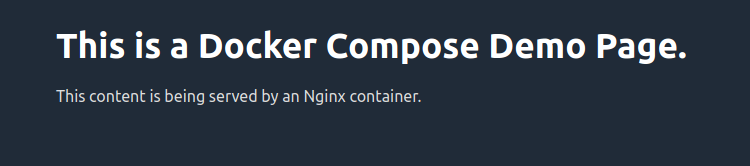

Docker compose
Docker can create one container with just one image (each image can create only one application). But, if we need to run many applications at the same time? We can use docker compose which groups the images in a document called docker-compose.yml.
Running hello-world image with docker-compose
Lets create a test:
$ mkdir hello-world # create some dir
$ cd hello-world # enter it
$ nano docker-compose.yml # create and open docker-compose.yml
Now, inside the doc you put the basic configuration:
my-test:
image: hello-world
This tells to docker that the container name is my-test and the image to be runned is hello-world.
Now if you see your images:
$ sudo docker images
Probably you will see:
Output
REPOSITORY TAG IMAGE ID CREATED SIZE
Then run inside the docker-compose.yml directory:
$ sudo docker-compose up # You will run the hello-world test script
Now, if you run sudo docker images again or sudo docker ps -a you will be able to see the container created by docker-compose.
Deploying a project with nginx image in docker-compose
Another test:
$ mkdir my-second-test
$ cd my-second-test
$ touch docker-compose.yml
$ mkdir app
$ cd app/
$ touch index.html
Inside index.html you can put something like:
<!doctype html>
<html lang="en">
<head>
<meta charset="utf-8">
<title>Docker Compose Demo</title>
<link rel="stylesheet" href="https://cdn.jsdelivr.net/gh/kognise/water.css@latest/dist/dark.min.css">
</head>
<body>
<h1>This is a Docker Compose Demo Page.</h1>
<p>This content is being served by an Nginx container.</p>
</body>
</html>
And inside docker-compose.yml you should put this:
version: '3.7'
services:
web:
image: nginx:alpine
ports:
- "8000:80"
volumes:
- ./app:/usr/share/nginx/html
Then, what we have? A html test file and the docker compose yml file. The yml file shows the version of docker-compose configurations and the services (in this case, just web). The web service has the image, that is nginx (it will deploy our html file), also has the port of deploy (8000 in our machine, but in the container it will be 80, which is the nginx port) and the volumes, which is where our application will be saved in the containers (we are defining that the app folder inside this directory will be saved as /usr/share/nginx/html in the container, which is the nginx projects path).
To run it:
$ sudo docker-compose up -d # -d is to run in second plan, so you can use the terminal
If you run sudo docker-compose ps or sudo docker ps you will see something like this:
CONTAINER ID IMAGE COMMAND CREATED STATUS PORTS NAMES
ef2d797f0157 nginx:alpine "/docker-entrypoint.…" 2 minutes ago Up About a minute 0.0.0.0:8000->80/tcp files_web_1
Then, just open localhost:8000 and see the project running:

If you see Forbidden 403, probably its because the folder in the container doesnt have permission, so just run:
$ sudo docker exec container_id chmod 755 /usr/share/nginx/html/index.html
Some more docker-compose commands
How docker-compose works with directories containers, you dont pass any name or id in the commands (just stay in the container directory).
To list the containers
$ sudo docker-compose ps
Upping a container
$ sudo docker-compose up # can use -d to second plan container
Down a container
$ sudo docker-compose down
See logs
$ sudo docker-compose logs
Pause/unpause a container
$ sudo docker-compose pause
$ sudo docker-compose unpause
Stop the container
$ sudo docker-compose stop
You can just run docker-compose and see the full list:
Commands:
build Build or rebuild services
config Validate and view the Compose file
create Create services
down Stop and remove containers, networks, images, and volumes
events Receive real time events from containers
exec Execute a command in a running container
help Get help on a command
images List images
kill Kill containers
logs View output from containers
pause Pause services
port Print the public port for a port binding
ps List containers
pull Pull service images
push Push service images
restart Restart services
rm Remove stopped containers
run Run a one-off command
scale Set number of containers for a service
start Start services
stop Stop services
top Display the running processes
unpause Unpause services
up Create and start containers
version Show version information and quit
Using docker-compose to create a laravel ambient
[Building...]